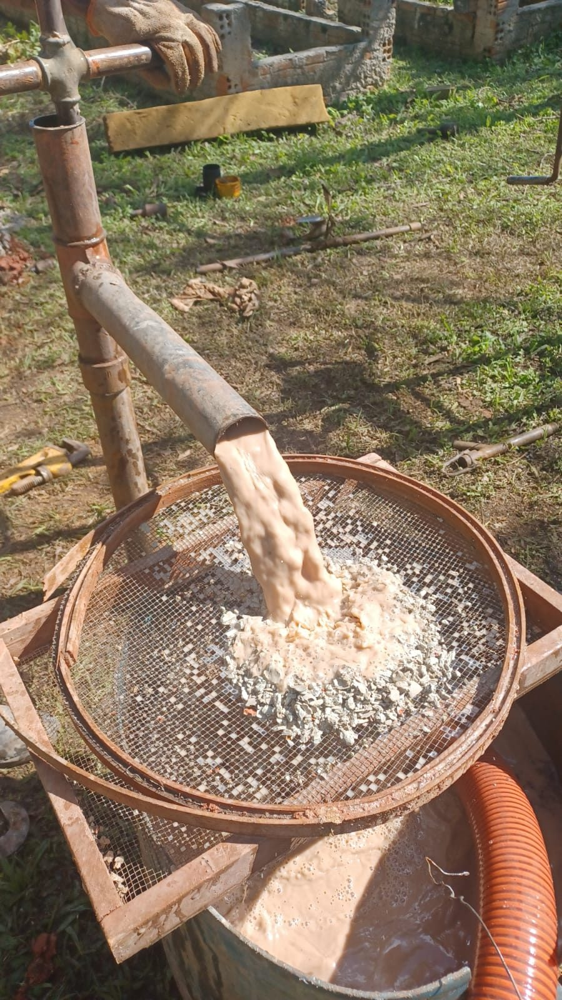
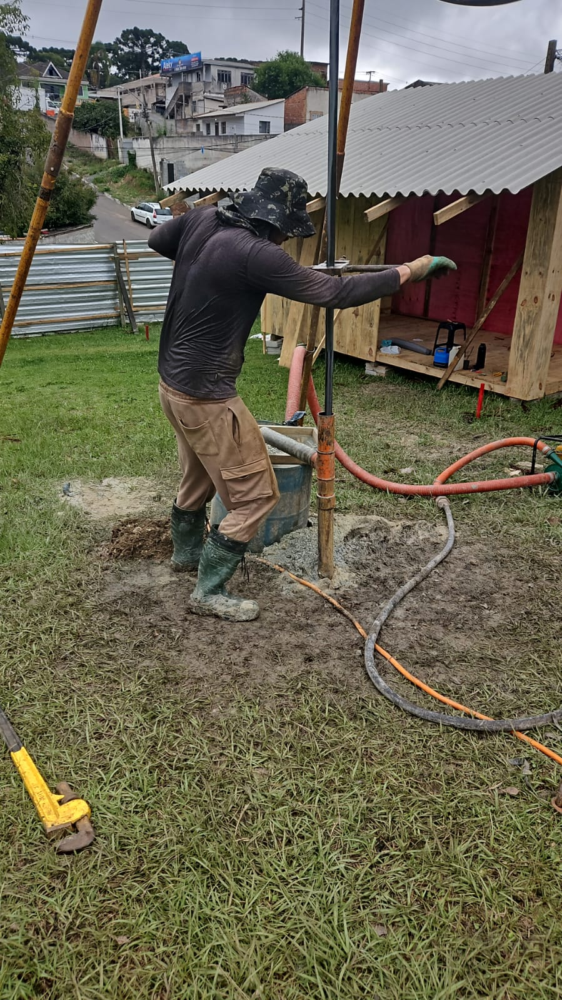

Sondagem SPT para o projeto de fundação da sua obra
Saiba como é o solo antes de construir. Executamos a sondagem com equipe e equipamento próprios e entregamos o relatório com ART, pronto para o projetista.
- Ensaio conforme a ABNT NBR 6484
- Perfil do solo, NSPT e nível d'água em cada furo
- Curitiba, Região Metropolitana, PR, SC e SP

Por que fazer a sondagem antes da obra
A fundação é a parte da obra que não dá para refazer depois. A sondagem mostra o que está embaixo do terreno.
Fundação do tamanho certo
O projetista escolhe entre fundação rasa ou profunda com base na resistência medida do solo, sem superdimensionar.
Menos risco de trincas e recalques
Camadas moles e lençol freático aparecem no relatório antes de virarem reforço caro com a obra pronta.
Documento exigido
Solicitado por projetistas estruturais, construtoras, bancos e órgãos públicos para aprovar e financiar a obra.
Como funciona
Do primeiro contato ao relatório.
-
Você envia os dados
Pelo WhatsApp: local da obra, tipo de construção e, se tiver, a planta com a posição dos furos.
-
Proposta
Definimos quantidade e profundidade dos furos conforme a norma e enviamos o orçamento.
-
Ensaio em campo
A equipe monta o tripé e executa o ensaio metro a metro, coletando as amostras de solo.
-
Relatório com ART
Você recebe os boletins de sondagem, o perfil do subsolo e a ART do responsável técnico.
O que vem no relatório
Cada furo gera um boletim com as informações que o projetista de fundações usa.
- Descrição de cada camada de solo
- Índice de resistência à penetração (NSPT) a cada metro
- Profundidade do nível d'água
- Classificação tátil-visual das amostras
- Croqui de locação dos furos
- ART do engenheiro responsável
Valores fictícios para mostrar o formato. Os resultados reais dependem de cada terreno.
Nossas sondagens em campo
Fotos de obras atendidas pela nossa equipe.





Perguntas frequentes
Quantos furos minha obra precisa?
Depende da área construída e do tipo de estrutura. A ABNT NBR 8036 define a quantidade mínima de furos. Envie a planta ou a área do terreno pelo WhatsApp e indicamos a quantidade adequada.
Até que profundidade vai a sondagem?
Até atingir o critério de paralisação da norma, que considera a resistência do solo em metros consecutivos e a carga prevista da obra.
O que preciso enviar para o orçamento?
Endereço ou localização da obra, tipo de construção (casa, prédio, galpão), área aproximada e, se tiver, a planta com a posição dos furos.
Vocês atendem fora de Curitiba?
Sim. Atendemos Curitiba, Região Metropolitana, interior do Paraná, Santa Catarina e São Paulo.
O relatório serve para o projeto de fundação?
Sim. Os boletins trazem NSPT, perfil do solo e nível d'água, que são os dados usados pelo projetista, e o relatório é acompanhado de ART.
Também precisa do levantamento do terreno? Veja nossos serviços de topografia.
Vai construir? Comece pela sondagem.
Fale com um engenheiro e receba o orçamento da sua sondagem SPT.